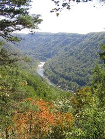

vt experience home about features back to peterpages.net
Virginia Polytechnic Institute and State University. Quite a mouthful. Fabulous Downtown Blacksburg, Virginia is home to what can only possibly be described as “an experience.” The school we know (and, some would say, love) as Virginia Tech is a unique place. The setting is idyllic (although sometimes a bit cold), the people are wonderful, and the school itself is (for the most part) quite exemplary. What I have attempted to create here is sort of a view from inside of Tech. With my trusty hand-me-down digital camera, I've tried to create a collection of snapshots (literally) of the little things that make the University what it is to its students. I think what I have done is to create a little bit of the Virginia Tech Experience for those who have never experienced it, and in doing so have hopefully helped to bring a little bit of it back to those Hokies who have progressed on in the world. I call these my Peripatetic Picture Pages for two reasons. First, I was trying to create some alliteration and find some cool word that started with "P" to add in. But after thinking about it for a while, this site is peripatetic in nature. The term comes from Aristotle's school at the Lyceum in Athens. Its name comes from peripatoi, the Greek word for walking, as Aristotle would walk as he lectured to his students. However, the term aptly represents the wandering nature of the experiences that one is privileged to by attending a large state university. From football to classes to field trips to the one-of-a-kind experience of returning home, the Virginia Tech Experience is an interesting one, to say the least. These photos are my attempt to share this with others. Now with real Thumbnails for faster loading! Continue on to the various Feature Pages. |
{kind=link}
{kind=link}
|